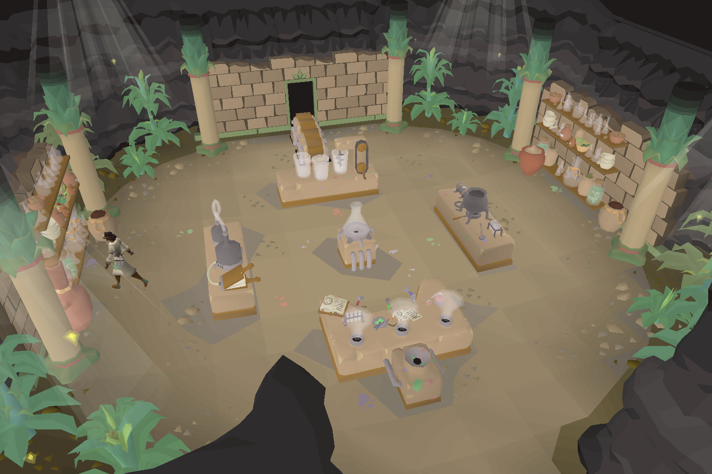
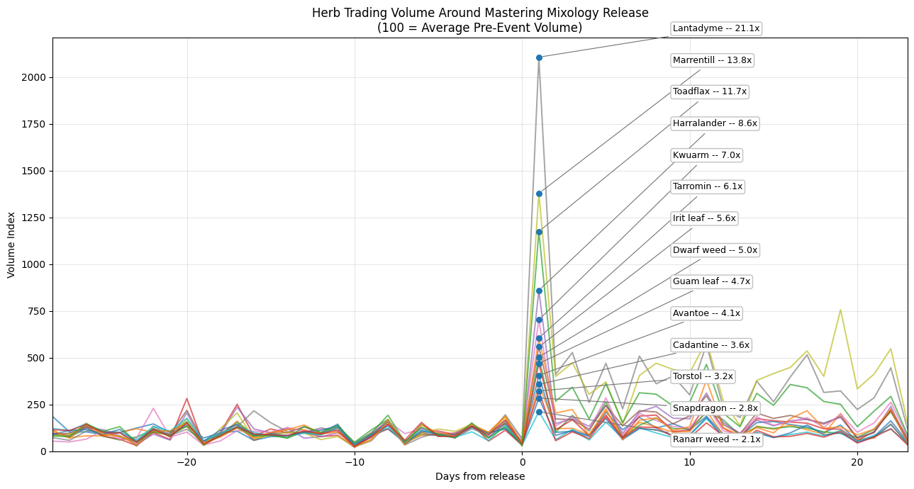
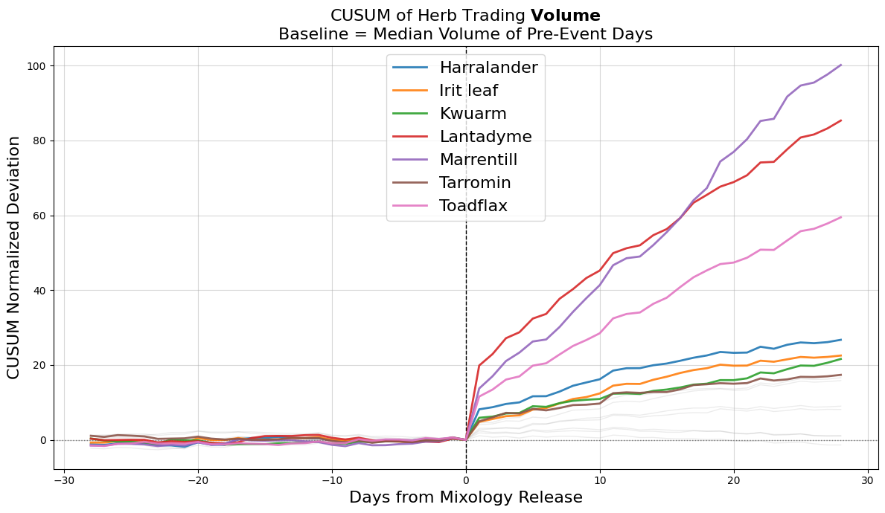
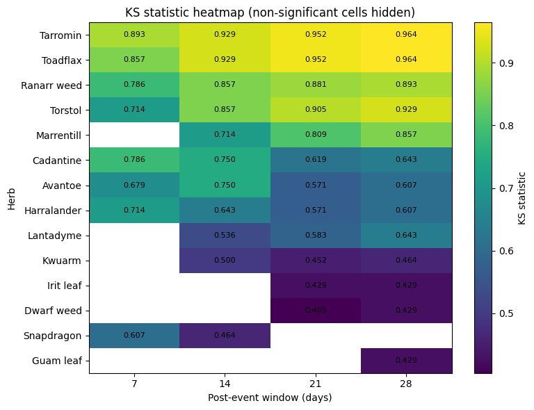
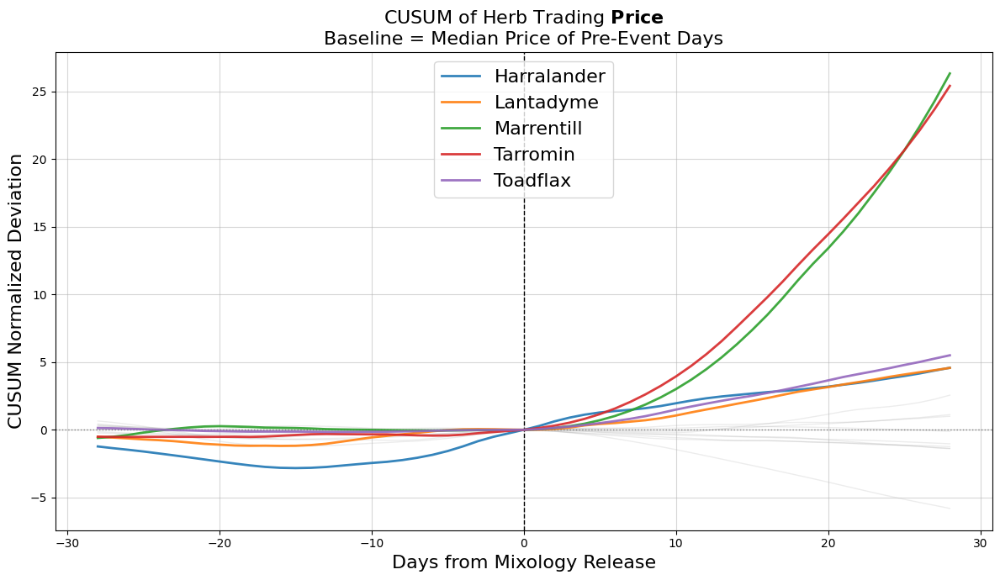
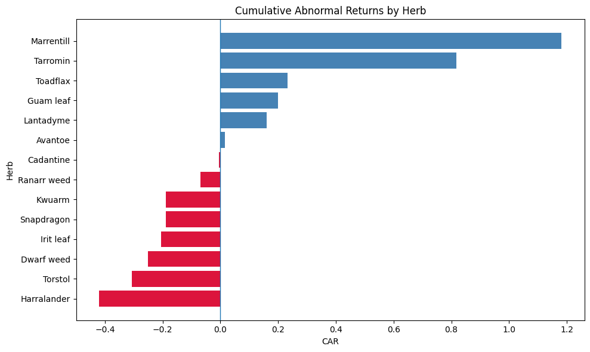
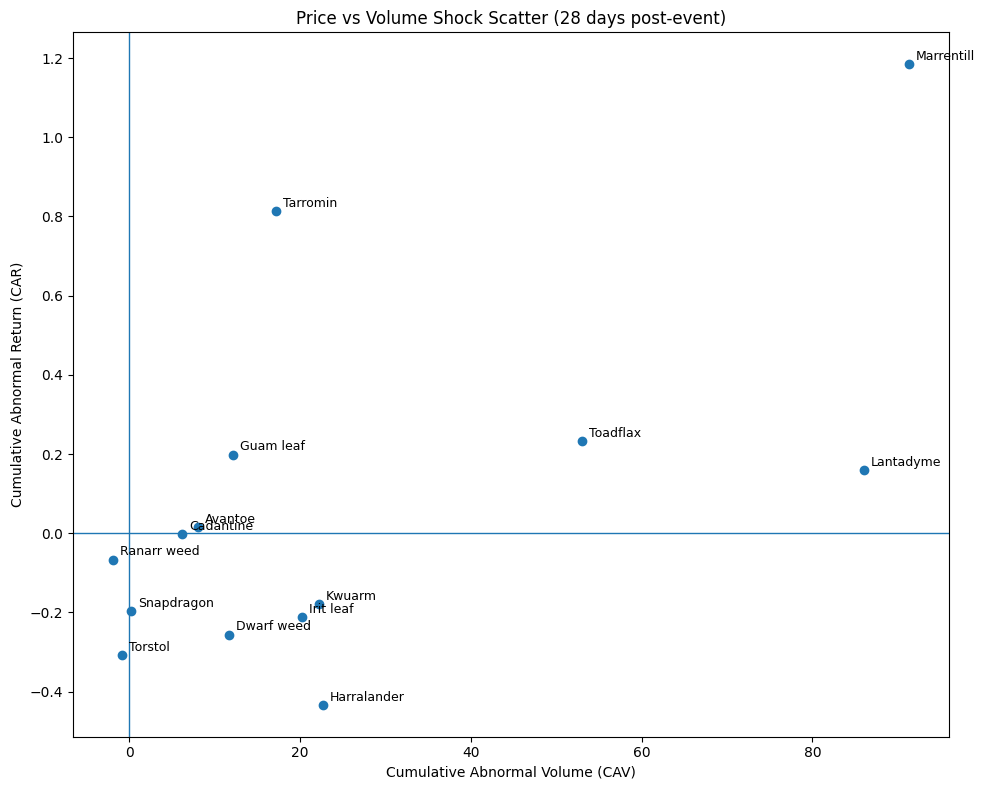
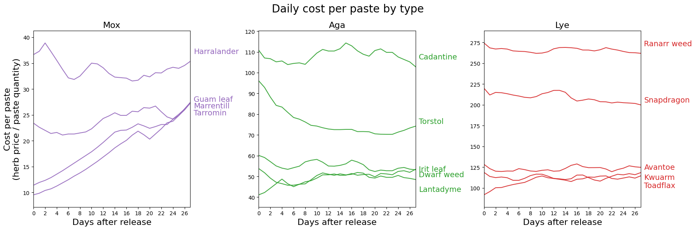
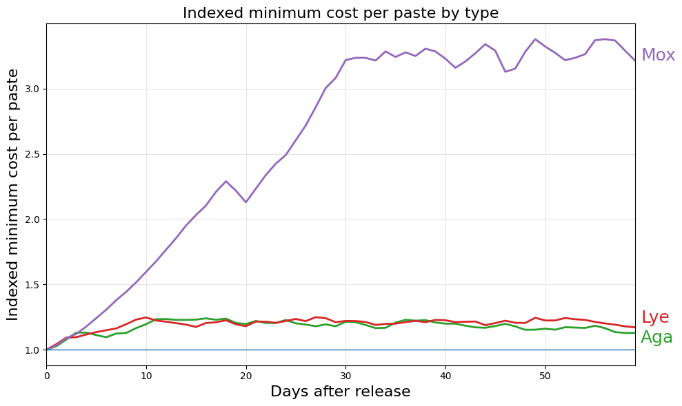

Old School RuneScape (OSRS) has a player-driven economy where items are traded on the Grand Exchange. Prices are determined entirely by player activity, which makes the game an interesting environment for studying how markets react to new content.
On September 25, 2024, Jagex released Mastering Mixology, a potion-making minigame that consumes herbs to produce new ingredients called pastes.

Each of the game's 14 tradeable herbs was assigned to one of three paste types: Mox, Aga, or Lye. Herbs within the same type produce the same paste but yield different numbers of pastes per herb.
This analysis examines how herb prices and trading activity changed after the release of the minigame and explores whether those changes match the structure of the recipes.
Daily price and volume data were collected from the OSRS Grand Exchange API. The dataset spans 2015 through 2025 and includes roughly 52,000 observations across 14 herbs.
Huasca, a herb introduced at the same time as the minigame, was excluded so the analysis could compare prices before and after the release.
Most of the analysis focuses on the 28 days before and after the launch on September 25, 2024.

Trading activity spiked sharply on release day. Every herb saw volume rise far above its normal level, with several increasing by more than ten times their pre-release averages.
This kind of surge is typical after a major update. Players rushed to buy herbs needed for the minigame while others sold herbs they had accumulated ahead of time.
Trading activity remained elevated for weeks afterward. This suggests the update created ongoing demand rather than a single short-term spike.

Price movements were more mixed. Some herbs rose sharply while others fell. Understanding this divergence becomes the focus of the rest of the analysis.

This test compares entire distributions rather than just averages. It can detect shifts in price levels as well as changes in volatility.
Several herbs show strong statistical evidence of a change in price behavior after the release. Marrentill, Tarromin, Toadflax, Torstol, and Ranarr weed show the largest shifts across multiple time windows.
The results suggest that the update did more than produce short-lived volatility. It altered how some herbs were priced in the market.

To understand how prices moved after the release, the analysis tracks cumulative abnormal returns. This measures how far prices moved relative to their typical behavior before the event.

The pattern is clear for several herbs. Marrentill and Tarromin rose dramatically in the weeks after release, roughly doubling in price. These herbs belong to the Mox paste category used in the minigame.
Several higher level herbs such as Torstol, Ranarr weed, and Snapdragon moved in the opposite direction and declined relative to their previous trends.
This split suggests that the new crafting system changed the relative value of different herbs.

Some herbs experienced both rising prices and heavy trading activity. Marrentill and Tarromin fall into this group, which is consistent with strong new demand created by the minigame.
Other herbs saw both falling prices and declining activity. Ranarr weed and Torstol are examples. These herbs already had strong demand for potions and may have gained little additional value from the new system.
A third group traded heavily but declined in price. Harralander is the most notable example. Its price rose ahead of the release but fell afterward as players shifted toward cheaper alternatives within the same paste category.
A final group shows only small changes, suggesting the minigame had little effect on those herbs.
The cost-per-paste calculation helps explain many of the observed price movements.

Within each paste category, herbs differ only in how many pastes they produce. Players trying to minimize costs will naturally favor herbs that generate paste more cheaply.
Before the minigame existed, this relationship had little influence on herb prices. After release, prices began moving toward a more consistent cost per paste within each category.

The Mox herbs show the clearest example. Marrentill and Tarromin rose quickly while Harralander remained flat or declined. Within a few weeks, the cost per paste for these herbs had largely converged.
This pattern is consistent with players shifting toward the most efficient inputs for paste production.
Several limitations should be noted.
The analysis uses daily price averages. Short-term price swings immediately after the update may not be visible in daily data.
The release also occurred close to two balance patches on October 2 and October 9. Some of the later price changes may reflect those adjustments rather than the original release.
Finally, price data alone cannot reveal individual trading behavior. Interpretations such as speculation or substitution between herbs are plausible but cannot be confirmed without transaction-level data.
Future analysis could extend this approach to related markets.
Herb seeds influence the supply of herbs, while potions compete with the minigame for herb demand. Secondary potion ingredients may also experience downstream effects.
Studying these connected markets would help build a fuller picture of how major updates reshape the in-game economy.